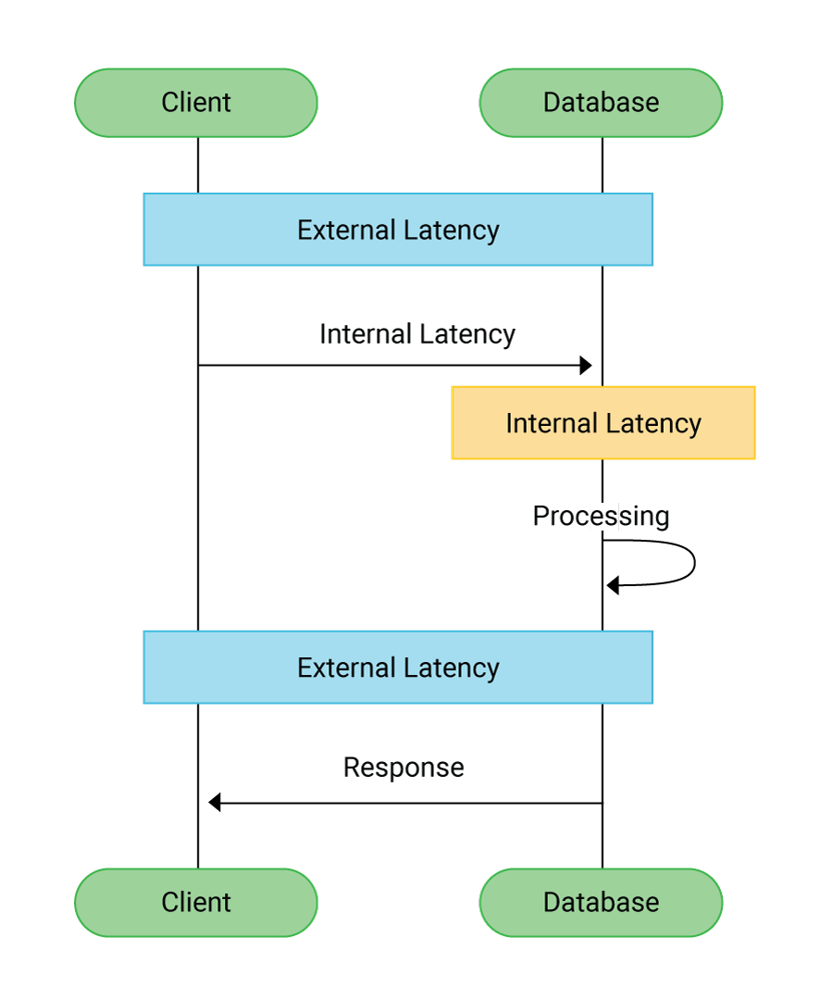

Hi everyone,
Today, I want to share a tech incident that occurred at my company, Blusmart Mobility. While it was a fairly simple issue, it was one that couldn’t have been avoided. As you may know, I work as a senior backend developer at Blusmart Mobility, where we have a feature that allows users to book rides and create recurring ride schedules for specific weekly times.
The Incident:
The issue we faced was that multiple ride creation events were happening for some users. To handle the scheduling of these ride creation events, we use Quartz Scheduler in the backend. Quartz is a powerful job scheduling library that helps execute background tasks like event handling.
At first, we suspected the issue was caused by multiple threads in Quartz executing the same event simultaneously. However, after looking into it, we found that this wasn’t the case. Quartz itself was functioning correctly, managing the state of the events (whether they were "Waiting," "Acquired," "Fired," "Paused," or "Completed").
After diving deeper into the problem, we realized the real cause: the issue wasn’t Quartz or how it was executing the jobs. The problem was that when we scheduled a job, it would trigger and be deleted within milliseconds. Then, another job would get scheduled, causing multiple jobs to trigger at nearly the same time. This happened because we were receiving multiple requests from the frontend in a very short time frame.
Root Cause:
The reason we were receiving multiple requests was due to network issues. If the user's network was weak, the app would hold onto requests until the network became reachable again. During this time, if the user clicked the button multiple times, the app would "hold" the requests and send them all at once once the network was back up, often within 300-400 milliseconds. This caused our backend to receive multiple requests, and as a result, we created multiple events for the same action.
We had not accounted for handling concurrent executions of the same event coming from multiple requests in such a short time span. This was the main issue.
Our Solutions:
We considered several potential solutions:
- Block Multiple Requests from Frontend within a Short Timeframe: This solution would involve preventing users from sending multiple requests in a short time. The advantage is that it would stop the problem at the frontend. However, it would require a new release of the frontend, and users with older app versions would still face the same issue. This wasn’t ideal, so we looked for an alternative.
- Apply Locks on Resources During Event Execution: We thought about applying locks to the resources when executing the event. This would ensure that only one job runs at a time. However, this solution posed challenges because the events were scheduled from different services, and we couldn’t apply this solution universally across all services without testing and understanding its full impact. It would also introduce code duplication across multiple APIs where this issue could arise. Not ideal for scalability.
- Implement an Interceptor to Restrict Multiple Requests: After considering the above options, we decided to implement an interceptor that would limit the number of requests allowed for the same action within a specific time window. This solution is more flexible and can be easily extended to other APIs. We decided to set the time window to 500ms, based on our P95 latency (the 95th percentile of response time). This means if multiple requests hit the backend within a 500ms window, only the first request would be allowed to proceed, and the others would be rejected.
Why 500ms?
We chose the 95th percentile because it covers most use cases—solving 95% of our issues. It won’t catch every edge case, but it greatly reduces the problem.
Code for the Interceptor:
@Component
@Slf4j
public class RequestThrottleInterceptor extends HandlerInterceptorAdapter {
@Autowired
private RedisTemplate redisTemplate;
private static final String THROTTLE_KEY_PREFIX = "request_throttle:";
private static final long THROTTLE_TIME_MS = 500L; // 500 ms
@Override
public boolean preHandle(HttpServletRequest request, HttpServletResponse response, Object handler)
throws Exception {
String requestUri = request.getRequestURI();
// Identify the user (could be IP, session ID, etc.)
Integer userSSOId = getUserIdentifier(request);
if (userSSOId == null) return true;
long currentTime = DateTime.now().getMillis();
// Generate dynamic Redis key based on the request URI
String redisKey = THROTTLE_KEY_PREFIX + convertUriToKey(requestUri) + ":ssoId:" + userSSOId;
Long lastRequestTime = redisTemplate.opsForValue().get(redisKey);
if (lastRequestTime != null && (currentTime - lastRequestTime) < THROTTLE_TIME_MS) {
log.info("Too many requests for URI: {}, redisKey : {}", requestUri,redisKey);
response.setContentType(MediaType.APPLICATION_JSON_VALUE);
PrintWriter out = response.getWriter();
out.print(
gson.toJson(
new ResponseDto<>(
StringConstants.FAILURE,
HttpStatus.TOO_MANY_REQUESTS.value(),
HttpStatus.TOO_MANY_REQUESTS.getReasonPhrase(),
null)));
out.flush();
return false;
}
// Use setEx to store and set expiration at once
redisTemplate.opsForValue().set(redisKey, currentTime, THROTTLE_TIME_MS / 1000, TimeUnit.SECONDS);
return true;
}
private Integer getUserIdentifier(HttpServletRequest request) {
return RequestContext.getSsoId();
}
// Helper method to convert URI to key format
// (e.g., /api/v1/recurring/ride/actions -> api_v1_recurring_ride_actions)
private String convertUriToKey(String uri) {
return uri.replaceAll("^/|/+", "_").substring(1);
}
}
How It Works:
Redis is used to store the time of the last request for each user and endpoint. The key is a combination of the request URI and the user’s unique identifier (e.g., ssoId).
The interceptor checks if the user has already sent a request for the same endpoint within the defined 500ms window. If a request comes in within this window, it will be blocked. If it’s the first request, it is allowed, and the time is updated in Redis.
This solution ensures that the user can only send one request within the time window, preventing the creation of multiple ride events from concurrent requests.
Conclusion:
We successfully solved the issue by implementing an interceptor with Redis-based throttling, which allows us to handle multiple requests in a short time frame efficiently. This solution is also extendable to other APIs that may encounter similar concurrency issues. We could still optimize this solution in the future to make it more flexible based on specific requirements. But for now, it has significantly reduced the problem and improved the user experience.
If you have any questions or suggestions, feel free to reach out to me for further discussions!